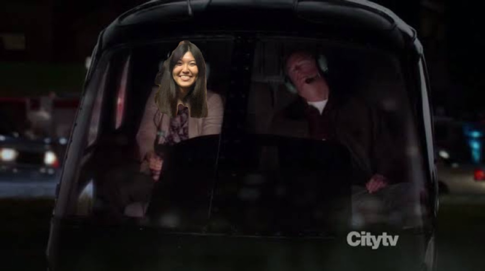

História do amor da minha vida
Todo mundo sabe que a senhorita Giovanna Fujita Sato é o meu grande amooooooor, então vim aqui contar um pouquinho sobre sua linda história.
Nasce uma Estrela
No dia 21 de dezembro de 2001 o "mundo ficou ainda mais lindo", como provavelmente dito por Jesus Cristo olhando o nascimento da Giovanninha lá do céu. Filha de Noêmia Fujita Sato e Nilo Sato, Giovaninha havia acabado de nascer.
Infância em Assaí
Giovanninha foi criado na belíssima cidade de Assaí, no interior do Paraná. Foi lá que ela fez grandes amizades que irão durar para a vida toda. Giovanninha, Juliana, Gisele e Mariana adoravam ir para o IFV estudar bastente e se divertirem ao som de Katy Perry
Relação com o Mundo Animal
Desde muito nova, Giovanninha se mostrou muito apegada aos animaizinhos e eles retribuiam o carinho que recebiam por ela de maneira magnifica. "Era incrível a relação que Giovanna tinha com os animais, principalmente com os cachorros e com as calopsitas", segundo o relato de sua Batian
Viagem para os Estados Unidos da América
Foi viajando para os Estados Unidos que a nossa princesa Giovanna se encontrou no mundo da moda. Lançando uma das maiores tendências dos últimos anos, sendo copiada de geração em geração, Giovanninha teve contato pela primeira vez com a AEROPOSTALE. "Nossa, quando eu vejo a Giovanninha com uma camiseta da AEROPOSTALE eu quase caio no chão de tanta beleza vinda em minha direção. Sério, meus olhos chegam a arder de tanta beleza concentrada. É a marca registrada dele e eu amooooo tanto", Disse Pablo, o sortudo namorado de Giovanna Fujita Sato.
Trajetória de Sucesso na Televisão
Durante sua graduação em Engenharia Elétrica, nossa querida Giovanninha começou a trabalhar no Grupo Paranaense de Comunicação (GRPCOM). Foi uma trajetória de sucesso meteórico que foi alavancada ao substituir Solange (que havia sido morta depois de uma crise de soluço durante a arrecadação de brinquedo para o Natal de 2024).
Nessa ocasião em específico, nossa heroína Giovanninha estava mostrando o caótico trânsito Maringaense por meio de um helicóptero. Durante essa reportagem o piloto do helicóptero também teve uma crise de soluço e acabou falecendo e de maneira espetacularmente espetacular, nossa Giovanninha pousou o helicóptero na ponta de Catedral de Maringá
Namoro com um menino doido
Nossa querida Giovanna surpreendeu a todos quando na metade de 2022 resolveu namorar com um garoto de beleza duvidosa chamado Pablito da Inova. Ele era doido e fazia muitas cagadas, mas mesmo assim o amor falou mais forte e isso fez com que ficassem juntos por toda a eternidade.
Pablito sabia o quão especial a Giovanninha era e sempre tentava fazer de tudo para vê-la feliz, inclusive caçar mais de um milhão de vagalumes por aí:
Depois de um tempo os dois casaram e moram em uma casa com um quintal enorme, no qual nossa querida e amada Giovanninha planta e cuida todos os dias dos seus pés de mamão e caju.
FIMMMMM
Então é isso! Essa foi a história que todo mundo estava esperando. Podemos conhecer um pouquinho sobre a vida dessa pessoa tão especial que tenho a honra de viver junto.
Hoje ela aproveita a aposentadoria com seus amigos
Te amo Giovanninha!